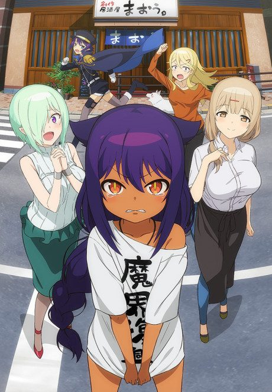

The Great Jahy Will Not Be Defeated!
ジャヒー様はくじけない！
After the anime, read the manga from Chapter 68.
6.8AniList score
—Animeter, no votes yet
20episodes
Rate it or report where you stopped
Anime finished. Where does the manga pick up?
Start at Chapter68
The anime ends after chapter 67 (chapters 38 and 56 were skipped), so start at chapter 68 (volume 9). The manga is still ongoing.
167ongoing
Season 1Start reading here